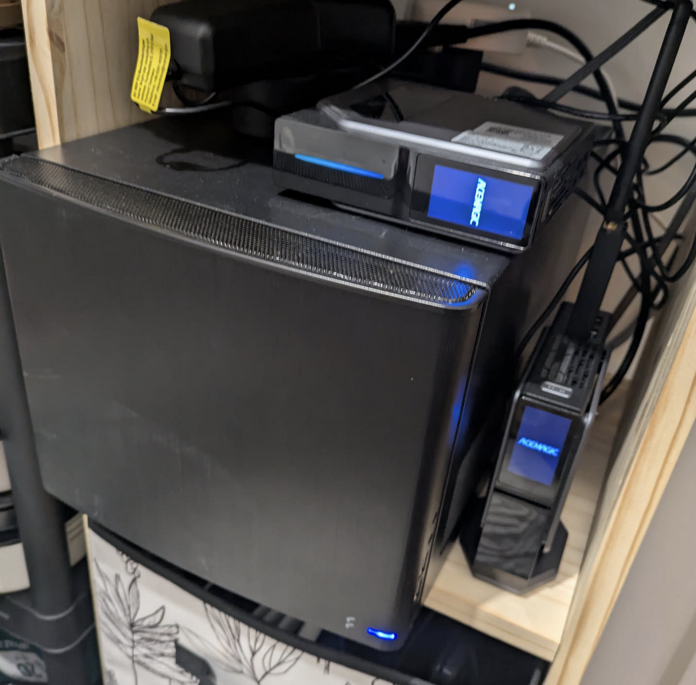

Welcome aboard!
This is a collection of notes and guides that I have written to help me remember how to do things. I hope you find them useful too. Keep in mind that everything here is a work in progress and that it's mostly for personal use, so it might not be the best way to do things, however, many choices are made with ease of use in mind.
First things first, let's explain what a CloudLab is.
What the heck is a CloudLab?
In opposition to a HomeLab, a CloudLab a server rented from a cloud provider. It's a great way to experiment with new technologies without the need to buy hardware and deal with the noise and heat of the servers.
In my personal case, I have both a Homelab and a CloudLab. I use the CloudLab to test new technologies and the Homelab to host sensitive data and services (clusters home is the name of my Homelab cluster, cortado and arabica are CloudLab clusters).
I have 2 n100 servers at home, both are running Proxmox and are connected to a 1G switch as well as my NAS.s 
Sorry cable management enthusiasts, I'm not there yet.
Which technologies are used?
Like many people in the k8s-at-home community, I use Kubernetes to manage my services and prioritize Helm charts to deploy them. But many services / applications doesn't have a Helm chart (or the one provided doesn't respect my requirements) so I chose to write my own templates (If you start looking at my configuration, you will sometimes see common-charts instead of the official Helm chart).
To install and managed my Kubernetes cluster, I use Talos, a modern OS for Kubernetes. It's a great way to have a minimal OS that is easy to manage and secure. On top of that, I also have Omni to manage my cluster. Omni allows me to manage many clusters from a single interface and provides features like gRPC Proxy (to access the Kubernetes API of all clusters, directly from Omni and by using a standard Kubeconfig, e.g. here), RBAC, Deployments, and more.
All Omni templates are stored in this repository (e.g. here) and are applied with omnictl.
Here are just a few of the technologies and applications I use :
- Omni (Self-hosted) : Manage all nodes between clusters and regions.
- Cilium as CNI and LB (ARP mode)
- ArgoCD to manage the GitOps workflow
- Nginx Ingress Controller for Ingress management (and Istio deployed on some clusters)
- Cert Manager for TLS certificates.
- Longhorn for storage based on nodes disks (Only on the home cluster).
- External Secrets to fetch secrets from a remote store.
- Vault as a secret store to store secrets.
- Cloudflare Tunnels to expose services to the internet (Only on the home cluster).
- ZFS + Local-Path-Provisioner to create persistent volumes on the mounted ZFS filesystem (Only on CloudLab cluster).
- Volsync to create backup and send backup (using restic) to a minio server (Only on CloudLab cluster).